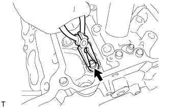

CYLINDER HEAD > DISASSEMBLY |
| 1. REMOVE INTAKE VALVE |
 |
Using SST, compress the compression spring and remove the valve spring retainer locks.
Remove the valve spring retainer, compression spring and intake valve.
| 2. REMOVE EXHAUST VALVE |
 |
Using SST, compress the compression spring and remove the valve spring retainer locks.
Remove the valve spring retainer, compression spring and exhaust valve.
| 3. REMOVE VALVE STEM OIL SEAL |
|  |
Using needle-nose pliers, remove the valve stem oil seals.
| 4. REMOVE VALVE SPRING SEAT |
Using compressed air and a magnet hand, remove the valve spring seats by blowing air onto them.
| 5. REMOVE NO. 1 STRAIGHT SCREW PLUG |
 |
Using a 10 mm hexagon wrench, remove the 6 No. 1 straight screw plugs and 6 gaskets.
| *A | for Bank 2 |
| *B | for Bank 1 |
| 6. REMOVE NO. 2 STRAIGHT SCREW PLUG |
 |
Using a 14 mm hexagon wrench, remove the 2 No. 2 straight screw plugs and 2 gaskets.
| *A | for Bank 2 |
| *B | for Bank 1 |
| 7. REMOVE STUD BOLT |